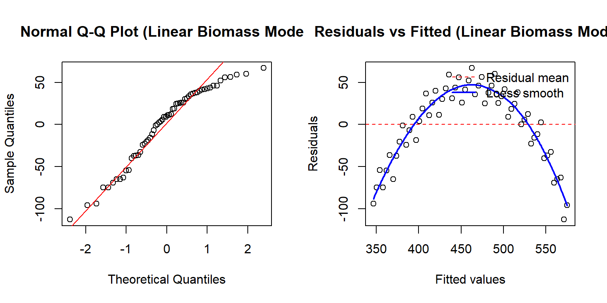
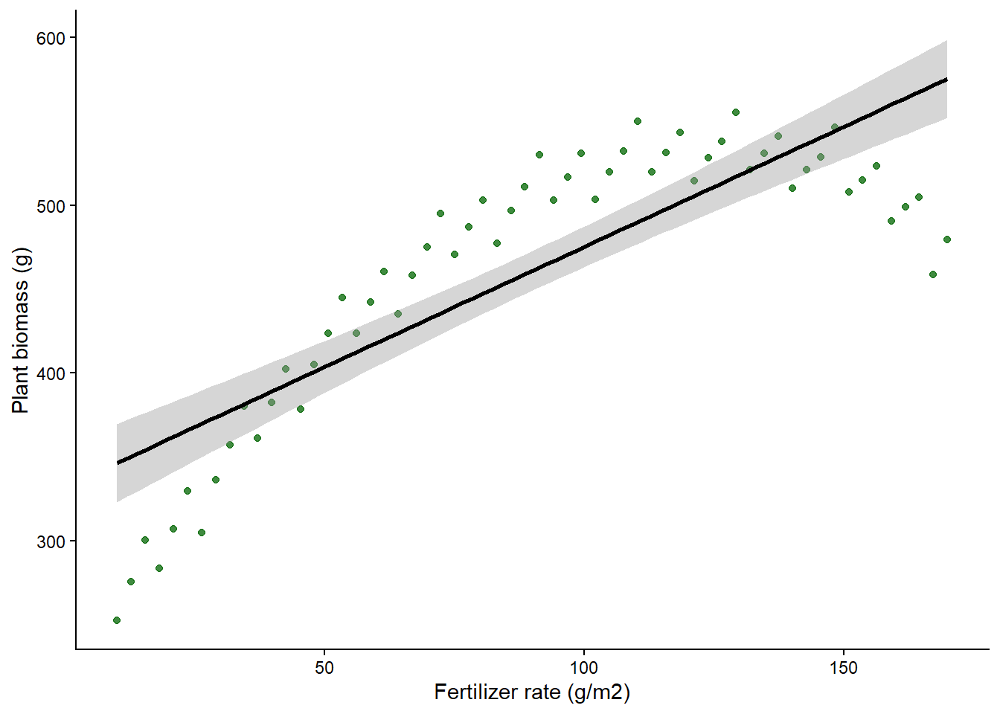
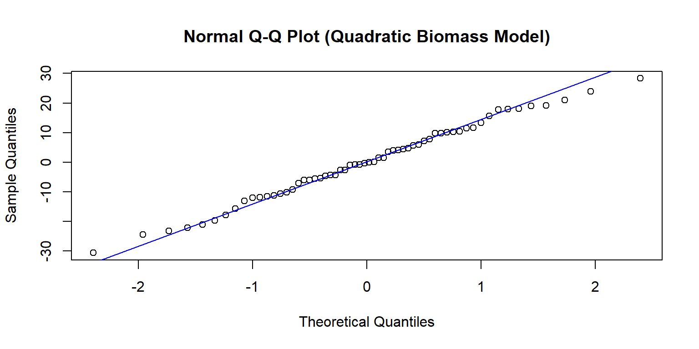
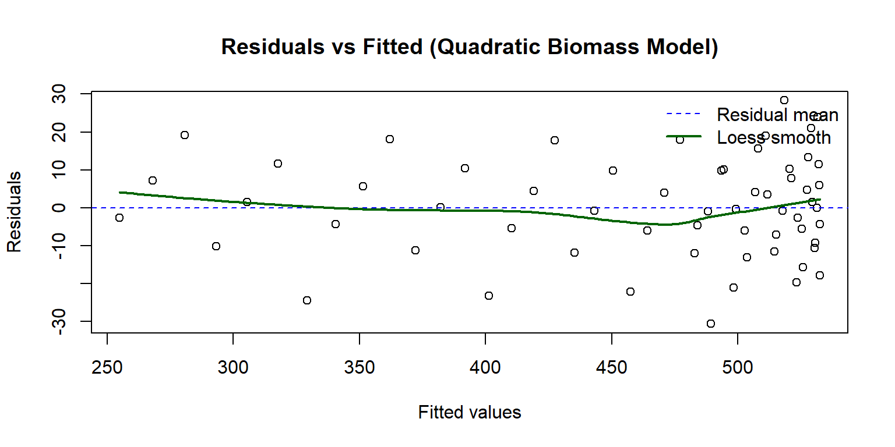
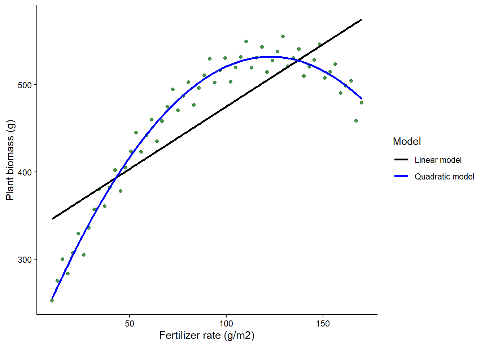
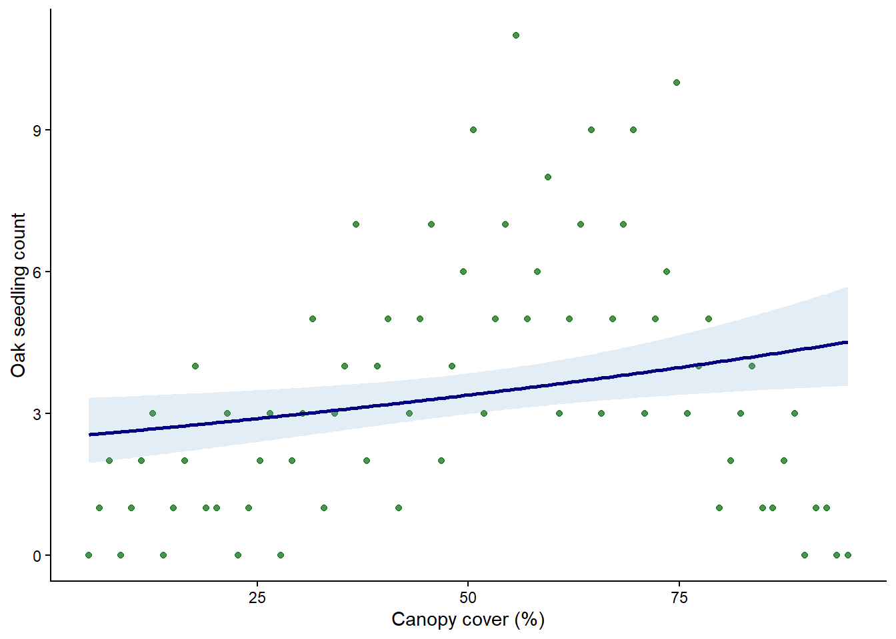
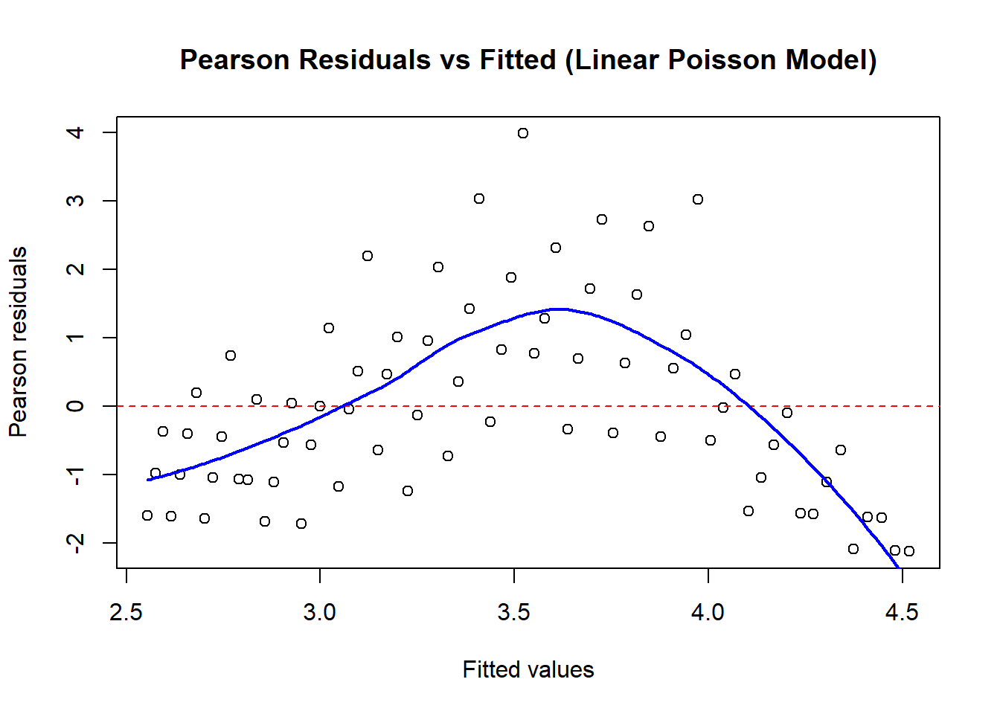
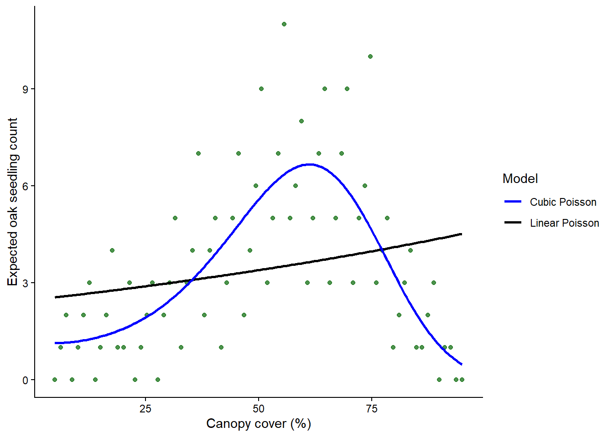
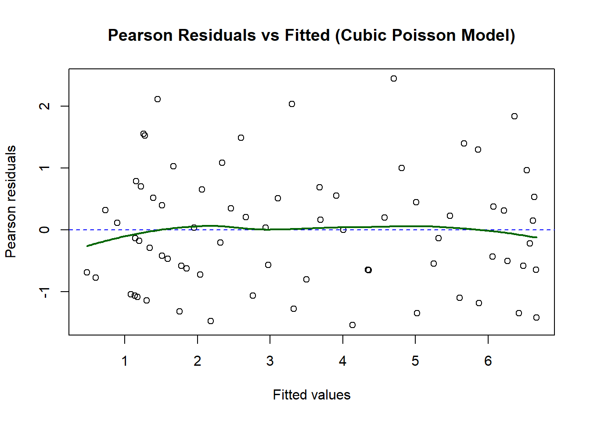

library(car)Loading required package: carDatalibrary(ggplot2)
library(AICcmodavg)Make sure you have these packages installed and loaded
library(car)Loading required package: carDatalibrary(ggplot2)
library(AICcmodavg)For this activity you will need the car package, the ggplot2 package, and the AICcmodavg package.
This in-class coding activity has four sections: a wrong linear model for a plant dataset, a quadratic correction, a simple Poisson model for count data, and a polynomial Poisson comparison.
Most of the code is provided. Your job is to run the chunks in order, look at the output, and answer the discussion questions on Canvas.
I want you to pay attention to one big idea all day: a model can still be linear in the coefficients even when it contains polynomial terms like x, I(x^2), and I(x^3).
I will start with a greenhouse dataset. Plants were grown under different fertilizer rates, and the response variable is aboveground biomass in grams.
The biology suggests that more fertilizer should help at first, but not forever. Still, I want to start with the wrong model on purpose.
plant_data <- read.csv("fertilizer_biomass_quadratic.csv")
str(plant_data)'data.frame': 60 obs. of 2 variables:
$ fertilizer_g_m2: num 10 12.7 15.4 18.1 20.8 23.6 26.3 29 31.7 34.4 ...
$ biomass_g : num 252 275 300 283 307 ...summary(plant_data) fertilizer_g_m2 biomass_g
Min. : 10.00 Min. :252.2
1st Qu.: 50.02 1st Qu.:418.8
Median : 90.00 Median :495.8
Mean : 90.00 Mean :460.9
3rd Qu.:129.97 3rd Qu.:521.1
Max. :170.00 Max. :555.5 biomass_linear <- lm(biomass_g ~ fertilizer_g_m2, data = plant_data)
summary(biomass_linear)
Call:
lm(formula = biomass_g ~ fertilizer_g_m2, data = plant_data)
Residuals:
Min 1Q Median 3Q Max
-112.86 -33.37 10.14 36.88 67.11
Coefficients:
Estimate Std. Error t value Pr(>|t|)
(Intercept) 332.0235 12.7513 26.04 <2e-16 ***
fertilizer_g_m2 1.4318 0.1256 11.40 <2e-16 ***
---
Signif. codes: 0 '***' 0.001 '**' 0.01 '*' 0.05 '.' 0.1 ' ' 1
Residual standard error: 45.7 on 58 degrees of freedom
Multiple R-squared: 0.6914, Adjusted R-squared: 0.6861
F-statistic: 129.9 on 1 and 58 DF, p-value: < 2.2e-16par(mfrow = c(1, 2))
qqnorm(resid(biomass_linear), main = "Normal Q-Q Plot (Linear Biomass Model)")
qqline(resid(biomass_linear), col = "red")
plot(
fitted(biomass_linear), resid(biomass_linear),
xlab = "Fitted values", ylab = "Residuals",
main = "Residuals vs Fitted (Linear Biomass Model)"
)
abline(h = mean(resid(biomass_linear)), col = "red", lty = 2)
fv <- fitted(biomass_linear)
rv <- resid(biomass_linear)
sm <- loess(rv ~ fv)
newx <- seq(min(fv), max(fv), length.out = 200)
lines(newx, predict(sm, newdata = newx), col = "blue", lwd = 2)
legend(
"topright",
legend = c("Residual mean", "Loess smooth"),
col = c("red", "blue"),
lty = c(2, 1),
lwd = c(1, 2),
bty = "n"
)
par(mfrow = c(1, 1))ggplot(plant_data, aes(x = fertilizer_g_m2, y = biomass_g)) +
geom_point(alpha = 0.75, color = "darkgreen") +
stat_smooth(method = "lm", formula = y ~ x, se = TRUE, color = "black") +
theme_classic() +
labs(
x = "Fertilizer rate (g/m2)",
y = "Plant biomass (g)"
)
In 1-2 sentences: What do the residuals-vs-fitted plot and the model plot suggest about the linearity assumption? What pattern tells you the linear model is wrong?
(Submit your answer on Canvas, do not write it here.)
Pause here: discussion
Now I will fit the model that matches the biological story more closely.
biomass_quadratic <- lm(
biomass_g ~ fertilizer_g_m2 + I(fertilizer_g_m2^2),
data = plant_data
)
summary(biomass_quadratic)
Call:
lm(formula = biomass_g ~ fertilizer_g_m2 + I(fertilizer_g_m2^2),
data = plant_data)
Residuals:
Min 1Q Median 3Q Max
-30.7175 -9.4775 -0.2193 9.8380 28.3386
Coefficients:
Estimate Std. Error t value Pr(>|t|)
(Intercept) 2.036e+02 6.384e+00 31.89 <2e-16 ***
fertilizer_g_m2 5.355e+00 1.622e-01 33.01 <2e-16 ***
I(fertilizer_g_m2^2) -2.179e-02 8.776e-04 -24.83 <2e-16 ***
---
Signif. codes: 0 '***' 0.001 '**' 0.01 '*' 0.05 '.' 0.1 ' ' 1
Residual standard error: 13.41 on 57 degrees of freedom
Multiple R-squared: 0.9739, Adjusted R-squared: 0.973
F-statistic: 1063 on 2 and 57 DF, p-value: < 2.2e-16par(mfrow = c(1, 1))
qqnorm(resid(biomass_quadratic), main = "Normal Q-Q Plot (Quadratic Biomass Model)")
qqline(resid(biomass_quadratic), col = "blue")
plot(
fitted(biomass_quadratic), resid(biomass_quadratic),
xlab = "Fitted values", ylab = "Residuals",
main = "Residuals vs Fitted (Quadratic Biomass Model)"
)
abline(h = mean(resid(biomass_quadratic)), col = "blue", lty = 2)
fv2 <- fitted(biomass_quadratic)
rv2 <- resid(biomass_quadratic)
sm2 <- loess(rv2 ~ fv2)
newx2 <- seq(min(fv2), max(fv2), length.out = 200)
lines(newx2, predict(sm2, newdata = newx2), col = "darkgreen", lwd = 2)
legend(
"topright",
legend = c("Residual mean", "Loess smooth"),
col = c("blue", "darkgreen"),
lty = c(2, 1),
lwd = c(1, 2),
bty = "n"
)
par(mfrow = c(1, 1))new_biomass <- data.frame(
fertilizer_g_m2 = seq(
min(plant_data$fertilizer_g_m2),
max(plant_data$fertilizer_g_m2),
length.out = 200
)
)
new_biomass$linear_fit <- predict(biomass_linear, newdata = new_biomass)
new_biomass$quadratic_fit <- predict(biomass_quadratic, newdata = new_biomass)
ggplot(plant_data, aes(x = fertilizer_g_m2, y = biomass_g)) +
geom_point(alpha = 0.7, color = "darkgreen") +
geom_line(
data = new_biomass,
aes(x = fertilizer_g_m2, y = linear_fit, color = "Linear model"),
linewidth = 1
) +
geom_line(
data = new_biomass,
aes(x = fertilizer_g_m2, y = quadratic_fit, color = "Quadratic model"),
linewidth = 1
) +
scale_color_manual(values = c("Linear model" = "black", "Quadratic model" = "blue")) +
theme_classic() +
labs(
x = "Fertilizer rate (g/m2)",
y = "Plant biomass (g)",
color = "Model"
)
AIC is the original information criterion and is most comfortable in large samples.
AICc is a corrected version of AIC that adds a small-sample penalty when the sample size is not very large relative to the number of parameters.
As sample size gets larger, AICc gets closer and closer to AIC.
A simple rule of thumb is this: if your dataset is modest in size, or if you are not sure, prefer AICc. In practice I usually use AICc for classroom datasets like this one.
AICcmodavgF aictab() reports AICc and orders models from best to worst.
aictab(
cand.set = list(linear = biomass_linear, quadratic = biomass_quadratic)
)
Model selection based on AICc:
K AICc Delta_AICc AICcWt Cum.Wt LL
quadratic 4 487.43 0.00 1 1 -239.35
linear 3 633.31 145.89 0 1 -313.44After fitting the quadratic model, what changed in the residual pattern? Which model is better supported by the information-criterion tables, and why?
(Submit your answer on Canvas, do not write it here.)
Pause here
Now we will switch to count data from an ecology study. Field crews counted oak seedlings across sites with different canopy cover.
I will start with the simplest Poisson GLM even though I already suspect the relationship is more complicated than a straight line on the link scale.
seedling_data <- read.csv("seedling_counts_cubic.csv")
str(seedling_data)'data.frame': 72 obs. of 2 variables:
$ canopy_cover_pct: num 5 6.3 7.5 8.8 10.1 11.3 12.6 13.9 15.1 16.4 ...
$ oak_seedlings : int 0 1 2 0 1 2 3 0 1 2 ...summary(seedling_data) canopy_cover_pct oak_seedlings
Min. : 5.00 Min. : 0.000
1st Qu.:27.48 1st Qu.: 1.000
Median :50.00 Median : 3.000
Mean :50.00 Mean : 3.444
3rd Qu.:72.53 3rd Qu.: 5.000
Max. :95.00 Max. :11.000 seedling_linear <- glm(
oak_seedlings ~ canopy_cover_pct,
family = poisson(link = "log"),
data = seedling_data
)
summary(seedling_linear)
Call:
glm(formula = oak_seedlings ~ canopy_cover_pct, family = poisson(link = "log"),
data = seedling_data)
Coefficients:
Estimate Std. Error z value Pr(>|z|)
(Intercept) 0.906001 0.146613 6.180 6.43e-10 ***
canopy_cover_pct 0.006337 0.002430 2.608 0.00912 **
---
Signif. codes: 0 '***' 0.001 '**' 0.01 '*' 0.05 '.' 0.1 ' ' 1
(Dispersion parameter for poisson family taken to be 1)
Null deviance: 160.05 on 71 degrees of freedom
Residual deviance: 153.19 on 70 degrees of freedom
AIC: 351.04
Number of Fisher Scoring iterations: 5new_seedlings <- data.frame(
canopy_cover_pct = seq(
min(seedling_data$canopy_cover_pct),
max(seedling_data$canopy_cover_pct),
length.out = 200
)
)
pred_linear <- predict(seedling_linear, newdata = new_seedlings, type = "link", se.fit = TRUE)
new_seedlings$linear_fit <- exp(pred_linear$fit)
new_seedlings$linear_lwr <- exp(pred_linear$fit - 1.96 * pred_linear$se.fit)
new_seedlings$linear_upr <- exp(pred_linear$fit + 1.96 * pred_linear$se.fit)
ggplot(seedling_data, aes(x = canopy_cover_pct, y = oak_seedlings)) +
geom_point(alpha = 0.7, color = "darkgreen") +
geom_ribbon(
data = new_seedlings,
aes(x = canopy_cover_pct, y = linear_fit, ymin = linear_lwr, ymax = linear_upr),
inherit.aes = FALSE,
alpha = 0.2,
fill = "skyblue3"
) +
geom_line(
data = new_seedlings,
aes(x = canopy_cover_pct, y = linear_fit),
inherit.aes = FALSE,
color = "navy",
linewidth = 1
) +
theme_classic() +
labs(
x = "Canopy cover (%)",
y = "Oak seedling count"
)
plot(
fitted(seedling_linear), resid(seedling_linear, type = "pearson"),
xlab = "Fitted values", ylab = "Pearson residuals",
main = "Pearson Residuals vs Fitted (Linear Poisson Model)"
)
abline(h = mean(resid(seedling_linear, type = "pearson")), col = "red", lty = 2)
fv3 <- fitted(seedling_linear)
rv3 <- resid(seedling_linear, type = "pearson")
sm3 <- loess(rv3 ~ fv3)
newx3 <- seq(min(fv3), max(fv3), length.out = 200)
lines(newx3, predict(sm3, newdata = newx3), col = "blue", lwd = 2)
Does the simple Poisson model seem flexible enough here? What do the raw plot and the Pearson residual plot suggest about the shape of the relationship?
(Submit your answer on Canvas, do not write it here.)
Pause here: discussion
Now I will fit models of increasing complexity and compare them.
seedling_quadratic <- glm(
oak_seedlings ~ canopy_cover_pct + I(canopy_cover_pct^2),
family = poisson(link = "log"),
data = seedling_data
)
seedling_cubic <- glm(
oak_seedlings ~ canopy_cover_pct + I(canopy_cover_pct^2) + I(canopy_cover_pct^3),
family = poisson(link = "log"),
data = seedling_data
)
summary(seedling_quadratic)
Call:
glm(formula = oak_seedlings ~ canopy_cover_pct + I(canopy_cover_pct^2),
family = poisson(link = "log"), data = seedling_data)
Coefficients:
Estimate Std. Error z value Pr(>|z|)
(Intercept) -1.4293224 0.3915859 -3.650 0.000262 ***
canopy_cover_pct 0.1161139 0.0152973 7.590 3.19e-14 ***
I(canopy_cover_pct^2) -0.0010467 0.0001407 -7.437 1.03e-13 ***
---
Signif. codes: 0 '***' 0.001 '**' 0.01 '*' 0.05 '.' 0.1 ' ' 1
(Dispersion parameter for poisson family taken to be 1)
Null deviance: 160.046 on 71 degrees of freedom
Residual deviance: 82.414 on 69 degrees of freedom
AIC: 282.27
Number of Fisher Scoring iterations: 5summary(seedling_cubic)
Call:
glm(formula = oak_seedlings ~ canopy_cover_pct + I(canopy_cover_pct^2) +
I(canopy_cover_pct^3), family = poisson(link = "log"), data = seedling_data)
Coefficients:
Estimate Std. Error z value Pr(>|z|)
(Intercept) 1.661e-01 5.526e-01 0.301 0.7637
canopy_cover_pct -1.592e-02 4.072e-02 -0.391 0.6957
I(canopy_cover_pct^2) 1.908e-03 8.944e-04 2.133 0.0329 *
I(canopy_cover_pct^3) -1.937e-05 5.937e-06 -3.263 0.0011 **
---
Signif. codes: 0 '***' 0.001 '**' 0.01 '*' 0.05 '.' 0.1 ' ' 1
(Dispersion parameter for poisson family taken to be 1)
Null deviance: 160.046 on 71 degrees of freedom
Residual deviance: 71.703 on 68 degrees of freedom
AIC: 273.56
Number of Fisher Scoring iterations: 5AICcmodavgseedling_tab <- aictab(
cand.set = list(
linear = seedling_linear,
quadratic = seedling_quadratic,
cubic = seedling_cubic
)
)
seedling_tab
Model selection based on AICc:
K AICc Delta_AICc AICcWt Cum.Wt LL
cubic 4 274.15 0.00 0.99 0.99 -132.78
quadratic 3 282.62 8.47 0.01 1.00 -138.13
linear 2 351.22 77.06 0.00 1.00 -173.52Look carefully at the delta values and the Akaike weights. A delta near 0 means the model is strongly supported relative to the others in the table. The weights can be read like relative support across the candidate set.
pred_cubic <- predict(seedling_cubic, newdata = new_seedlings, type = "link", se.fit = TRUE)
new_seedlings$cubic_fit <- exp(pred_cubic$fit)
ggplot(seedling_data, aes(x = canopy_cover_pct, y = oak_seedlings)) +
geom_point(alpha = 0.7, color = "darkgreen") +
geom_line(
data = new_seedlings,
aes(x = canopy_cover_pct, y = linear_fit, color = "Linear Poisson"),
linewidth = 1
) +
geom_line(
data = new_seedlings,
aes(x = canopy_cover_pct, y = cubic_fit, color = "Cubic Poisson"),
linewidth = 1
) +
scale_color_manual(values = c("Linear Poisson" = "black", "Cubic Poisson" = "blue")) +
theme_classic() +
labs(
x = "Canopy cover (%)",
y = "Expected oak seedling count",
color = "Model"
)
plot(
fitted(seedling_cubic), resid(seedling_cubic, type = "pearson"),
xlab = "Fitted values", ylab = "Pearson residuals",
main = "Pearson Residuals vs Fitted (Cubic Poisson Model)"
)
abline(h = mean(resid(seedling_cubic, type = "pearson")), col = "blue", lty = 2)
fv4 <- fitted(seedling_cubic)
rv4 <- resid(seedling_cubic, type = "pearson")
sm4 <- loess(rv4 ~ fv4)
newx4 <- seq(min(fv4), max(fv4), length.out = 200)
lines(newx4, predict(sm4, newdata = newx4), col = "darkgreen", lwd = 2)
Which Poisson model is best supported by the AICc table? Use the delta values and Akaike weights in your answer, and explain what the cubic terms add biologically.
(Submit your answer on Canvas, do not write it here.)